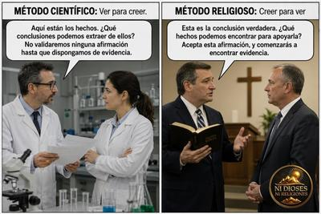

Hay frases que, por repetición, adquieren un prestigio inmerecido. Como «Hay que creer para ver», que los religiosos suelen pronunciar como si encerrara una profunda «sabiduría espiritual», cuando en realidad funciona más bien como una invitación a desactivar el pensamiento crítico.


Porque, seamos sinceros: si aceptáramos ese principio como válido para conocer la realidad, ¿qué nos impediría creer en la existencia de Santa Claus, Blanca Nieves, Mickey Mouse, el Hombre Araña o cualquier personaje ficticio? Bastaría con tener suficiente fe y esperar pacientemente a que algún día apareciera alguna «señal» que confirmara nuestra creencia. Suena absurdo, ¿verdad? Y precisamente ese es el problema.
La ciencia hace exactamente lo contrario: primero está la evidencia y después la «creencia». Aunque, claro, «ver» no significa en este caso necesariamente mirar con los ojos; significa observar, medir, registrar, experimentar y comprobar. O sea, si una afirmación pretende describir la realidad, debe aportar evidencias objetivas que cualquiera pueda verificar, independientemente de sus preferencias o creencias personales. Y esto, porque la ciencia parte de una actitud esencialmente humilde: «No lo sé. Muéstramelo.»
No importa cuán hermosa, emocionante o intuitiva parezca una idea, mientras no existan pruebas suficientes, permanece en el terreno de las hipótesis. Y esa sencilla regla explica por qué hoy tenemos vacunas, teléfonos inteligentes, satélites, resonancias magnéticas y telescopios capaces de observar galaxias a millones de años luz. Ninguno de esos avances apareció porque alguien decidió «tener fe» en ellos. Surgieron porque las hipótesis fueron sometidas constantemente a la posibilidad de estar equivocadas.
La religión, sin embargo, parece disfrutar de un extraño privilegio. Ella aplica un método exclusivo, bastante peculiar: Primero debes creer, y una vez que ya crees, comenzarás a «ver». Es, sin duda, un sistema demasiado conveniente, porque si no ves nada, el problema no es la ausencia de evidencia, el problema eres tú, que todavía no crees lo suficiente. Por lo que, si sigues sin ver, necesitas más fe. Y si después de muchos años continúas sin ver absolutamente nada verificable, te dicen que precisamente esa ausencia de pruebas demuestra la grandeza de la fe. Resulta difícil imaginar un mecanismo más inmune a cualquier posibilidad de ser refutado.
Para comprenderlo mejor, veamos lo que llamaremos «experimento de Mickey Mouse»: imaginemos que aplicamos esa lógica de «Creer para ver» a cualquier afirmación, y alguien por ahí asegura que Mickey Mouse realmente existe. Y cuando preguntas por las pruebas, te responde:
—No puedes verlo porque primero debes creer.
Y entonces, siguiendo la «metodología», decides creer, por lo que comienzas a interpretar cualquier coincidencia como evidencia. Encuentras el dibujo de un ratón… ¡Ah, una señal! Escuchas a un niño hablar de Disney… ¡Otra indicación! Y ves dos círculos que recuerdan unas orejas… ¡Milagro! Poco a poco tu cerebro comienza a encontrar «pruebas» por todas partes. ¿Significa eso que Mickey Mouse existe? ¡Por supuesto que no! Significa solamente que el cerebro humano es extraordinariamente bueno encontrando patrones cuando ya está convencido de algo. Y es precisamente por eso que existe el método científico.
Desde hace décadas la psicología conoce un fenómeno que nos impide ver la realidad de las cosas: el sesgo de confirmación. Porque resulta que cuando los humanos creemos algo con suficiente intensidad, tendemos a recordar y ver únicamente aquello que confirma nuestras expectativas, e ignoramos todo lo que las contradice. Y ese no es un defecto exclusivo de los religiosos; todos los seres humanos caemos en él. Pero precisamente por eso, la ciencia diseñó procedimientos destinados a minimizar el problema. Por eso llegó a la conclusión de que los experimentos deben poder repetirse, las mediciones deben ser objetivas, y los resultados deben ser verificables por personas que incluso deseen demostrar que estás equivocado. Por eso la ciencia no intenta demostrar que tiene razón, intenta descubrir cuándo está equivocada. En cambio, la religión invierte el proceso.
La diferencia fundamental está en el punto de partida: la ciencia comienza diciendo, «No aceptaremos esta afirmación hasta disponer de evidencia». Mientras muchas religiones comienzan diciendo, «Acepta esta afirmación, y así comenzarás a encontrar evidencia». Es exactamente el orden inverso. Y ese cambio aparentemente pequeño, transforma totalmente el método. Porque cuando una conclusión está decidida desde el principio, toda la realidad termina reinterpretándose para ajustarse a ella. Las casualidades se convierten en «milagros», las emociones pasan a ser revelaciones, las intuiciones se transforman en pruebas, y cualquier acontecimiento puede convertirse en una confirmación divina… siempre que uno ya haya decidido creer de antemano.
Sin embargo, el «creer» de la ciencia no es el mismo de la religión. Alguien podría objetar que los científicos también creen cosas antes de demostrarlas. Y es verdad… pero sólo en un sentido muy específico. Un investigador puede sospechar que existe una nueva partícula, una enfermedad desconocida o un fenómeno aún no explicado. Pero esa intuición sirve solamente para formular una hipótesis, no para declararla verdadera. Después viene el trabajo difícil: hay que diseñar experimentos, recoger datos, intentar demostrar que la hipótesis es falsa, y si los resultados no la respaldan, se abandona sin contemplaciones. Porque en ciencia, las hipótesis se adaptan a los hechos. En religión en cambio, los hechos terminan adaptándose a las creencias.
Pero dime honestamente, ¿realmente aplican los religiosos en su vida diaria ese principio de «Creer para ver»? Cuando compran una casa, ¿firman el contrato primero y luego esperan descubrir si la vivienda existe? Cuando cruzan un puente, ¿confían ciegamente en que resistirá porque tienen mucha fe? Cuando realizan una transferencia bancaria, ¿creen primero que el dinero llegó y sólo después revisan la cuenta? Por supuesto que no. En todos esos casos exigen pruebas: documentos, garantías, resultados, experiencia. Es decir, exactamente el mismo principio que utilizan la ciencia y el sentido común. Resulta curioso entonces que la fe basada en la ausencia de evidencia sea considerada una virtud, pero sólo cuando el tema es religioso.
Quizá la diferencia más profunda entre ambos enfoques sea esta: mientras la ciencia considera honroso cambiar de opinión cuando aparecen nuevas pruebas, la religión considera meritorio mantener la misma creencia, incluso cuando las pruebas nunca llegan, o incluso cuando refutan la creencia. Una celebra la capacidad de corregirse, mientras que la otra convierte la perseverancia en una virtud, incluso cuando carece de respaldo objetivo.
Hay, sin embargo, una realidad que cada vez se hace más evidente: creer no produce realidades. La intensidad de una creencia no modifica los hechos. Millones de personas pueden creer sinceramente cosas incompatibles entre sí. Unos creen en Yahvé, otros en Alá, otros en Krishna, otros en los espíritus ancestrales. Y todos experimentan convicciones profundas, todos afirman haber sentido una presencia, y aseguran haber recibido respuestas. Pero como esas experiencias se contradicen mutuamente, resulta evidente que la intensidad de la convicción no basta para distinguir la realidad de la imaginación. Las personas pueden creer sinceramente en algo falso, y la historia humana está llena de ejemplos.
En fin, «Creer para ver» puede sonar inspirador en un sermón o en una tarjeta motivacional. Pero como método para descubrir cómo funciona el universo, es absolutamente ineficaz. Si lo aplicáramos de manera consistente, terminaríamos creyendo cualquier cosa que alguien afirmara con suficiente entusiasmo, y el mundo ya tiene bastantes supersticiones como para añadir unas cuantas más.
Por eso la ciencia adoptó un principio mucho menos poético, pero mucho más útil: no creemos porque queremos creer; creemos cuando la realidad nos obliga a hacerlo. Puede que esta actitud no produzca tantos «milagros», pero produce algo mucho más valioso: conocimiento.
[Godless Freeman]
Comentarios
Comments powered by Disqus